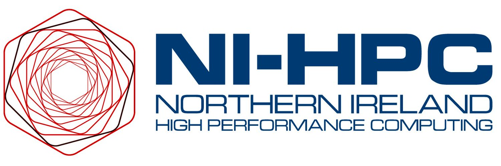

Home

Introduction
The NI-HPC Centre is a UK Tier-2 National High Performance Computing (HPC) facility funded by the Engineering and Physical Sciences Research Council (EPSRC) and jointly managed by Queen's University Belfast (QUB) and Ulster University. The £2M investment from EPSRC will have significant impact for science, by expanding the use of HPC to new pools of talent and new areas of investigation for Northern Ireland. This will be done by building on the strong collaboration between Ulster University and QUB, already established through two major city deal initiatives.
To learn more please visit our website.
Acceptable Use Policy
Northern Ireland High Performance Computing (NI-HPC) Centre Acceptable Use Policy
1. Introduction
This Acceptable Use Policy (AUP) sets forth the terms and conditions under which users are granted access to the Kelvin-2 system based at the NI-HPC Centre at Queen’s University Belfast. The NI-HPC service is provided to support academic research and teaching activities. All users must adhere to this policy to ensure the service remains secure, efficient, and equitable for all.
2. Scope
This policy applies to all users of the NI-HPC service, including but not limited to students, academic staff, researchers, and external collaborators. It covers the use of all NI-HPC resources, including computing nodes, storage systems, networking, and software applications.
3. User Responsibilities
3.1 Compliance with Laws and University Policies
Users must comply with all relevant UK laws, University regulations, and policies when using the HPC service. This includes, but is not limited to, compliance with the General Data Protection Regulation (GDPR), intellectual property laws, and the University’s IT policies.
3.2 Account Security
Users are responsible for the security of their NI-HPC accounts. This includes safeguarding passwords, not sharing account credentials, and immediately reporting any suspected security breaches to the NI-HPC support team.
3.3 Use of Resources
NI-HPC resources must be used efficiently and responsibly. Users should:
- Prioritize jobs appropriately and avoid monopolizing resources.
- Use storage space judiciously and delete data no longer required.
- Not run unauthorized software or engage in activities that could harm the system's integrity or performance.
- Adhere to any specific guidelines or restrictions communicated by the NI-HPC team regarding resource usage.
3.4 Data Management and Confidentiality
Users are responsible for managing their data, including ensuring regular backups and adhering to data retention policies. Sensitive or confidential data must be handled in accordance with the University's data protection policies.
4. Prohibited Activities
The following activities are strictly prohibited:
4.1 Unauthorized Access
Attempting to gain unauthorized access to any part of the NI-HPC service or other systems connected to the University network.
4.2 Malicious Activity
Engaging in any activity that could harm the NI-HPC system or other users, including the introduction of malware, denial-of-service attacks, or any form of hacking.
4.3 Commercial Use
Using the NI-HPC service for commercial purposes without explicit authorization from the University. The HPC service is intended for academic and research purposes only.
4.4 Infringement of Intellectual Property
Using the NI-HPC service to infringe upon the intellectual property rights of others, including unauthorized use of copyrighted materials, software, or data.
4.5 Unlawful or Unethical Use
Any use of the NI-HPC service for activities that are unlawful, unethical, or violate University policies, including but not limited to, storing or distributing offensive, discriminatory, or otherwise inappropriate content.
5. Monitoring and Enforcement
5.1 Monitoring
The University reserves the right to monitor the use of the NI-HPC service to ensure compliance with this AUP. This includes the monitoring of job submissions, resource usage, and data transfers. Such monitoring will be conducted in compliance with relevant privacy laws and University policies.
5.2 Violation and Consequences
Violations of this policy may result in the suspension or termination of access to the NI-HPC service, disciplinary action, and potential legal consequences. The University may also recover any costs incurred due to unauthorized use or damage caused by policy violations.
6. Support and Contact Information
Users can contact the NI-HPC support team for assistance or to report issues related to the HPC service. The HPC support team can be reached via the University Site Help Desk or by emailing hpc@qub.ac.uk.
7. Policy Review
This policy will be reviewed periodically and may be updated to reflect changes in the University's IT environment, legal requirements, or best practices. Users will be notified of any significant changes to this policy.
8. Acknowledgment
By using the NI-HPC service, users acknowledge that they have read, understood, and agree to comply with this Acceptable Use Policy.